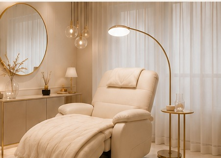
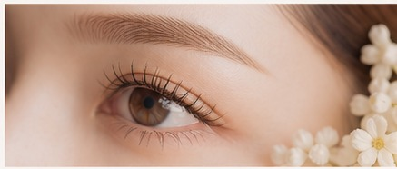
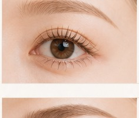
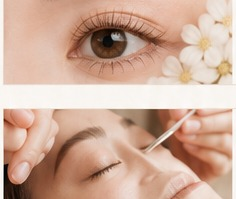
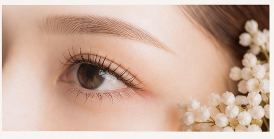
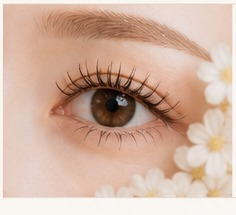

施術事例
Lucia がご提案する目元デザインの実例です。繊細で洗練されたデザインの数々をご覧ください。
Galleryデザインギャラリー

ナチュラル
自然な美しさを引き出す柔らかな印象。
Cカール／0.15mm／9〜11mm

上品
上向きカールで華やかな大人の印象に。
Dカール／0.10mm／10〜12mm

ラッシュリフト
根元から立ち上げ、ぱっちりとした目元に。
カールデザイン／上下

アイブロウ
ふんわりとした毛流れで自然な印象に。
ストレートライン／WAX込

ナチュラル
デカ目に頼らない、抜け感のあるナチュラル。
Cカール／0.12mm／8〜11mm
上品
目尻に長さを足し、洗練された目元へ。
CCカール／0.15mm／11〜13mm
ラッシュリフト
自まつ毛を生かした、ナチュラルなカール。
ナチュラルカール／上のみ
アイブロウ
骨格を整え、顔全体の印象を美しく。
デザインスタイリング／カラー
※効果・仕上がりには個人差があります。デザインや本数はカウンセリングのうえご提案・決定いたします。
Voiceお客様の声
自然で上品な仕上がりに感動
なりたい印象を丁寧にカウンセリングしてくださり、ナチュラルなのに目元の印象が変わりました。毎日のメイクがとても楽になりました。
30代・会社員
持ちが良くて大満足です
まつ毛の状態も丁寧に説明してくれて安心でした。仕上がりも持ちも良く、定期的に通っています。
20代・会社員
眉でこんなに変わるなんて
アイブロウのデザインを変えただけで顔全体の印象がすっきり。併せてお願いして本当によかったです。
40代・主婦
あなたに似合う目元デザインを、Lucia で。
ご予約・空き状況のご確認はこちらから。